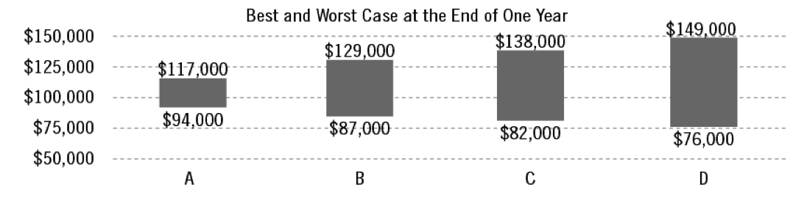
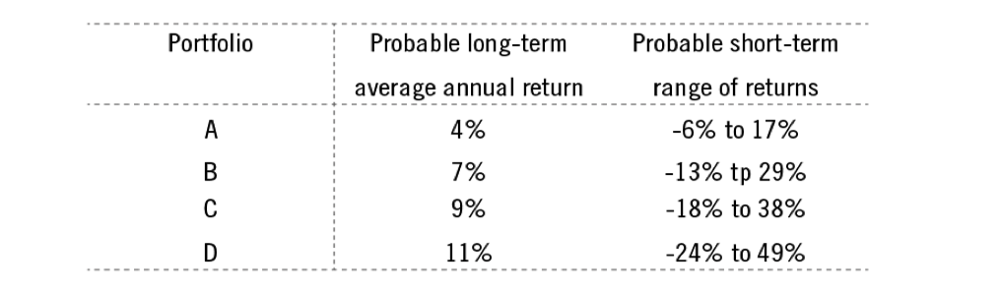

In approximately how many years do you expect to need the money you're investing?
The following graph shows the potential best and worst cases of investing $100,000 for one year in each of four hypothetical portfolios. Portfolios with the potential greatest gains also have the largest potential losses. In which portfolio would you be most comfortable investing?

The table below shows the probable long-term average annual return and the probable short-term range of returns for four hypothetical portfolios. Choose the portfolio in which you are most confortable investing.

I am willing to expereince potentially large and frequent declines in the value of my investment if it will increase the likelihood of achieving high, long-term returns.
If applicable, approximately what percentage of your total account would you like to remain in cash?
Are there any other special concerns or requests which we should note on your account?